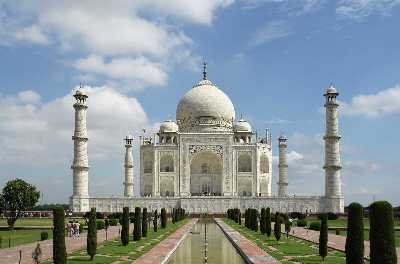
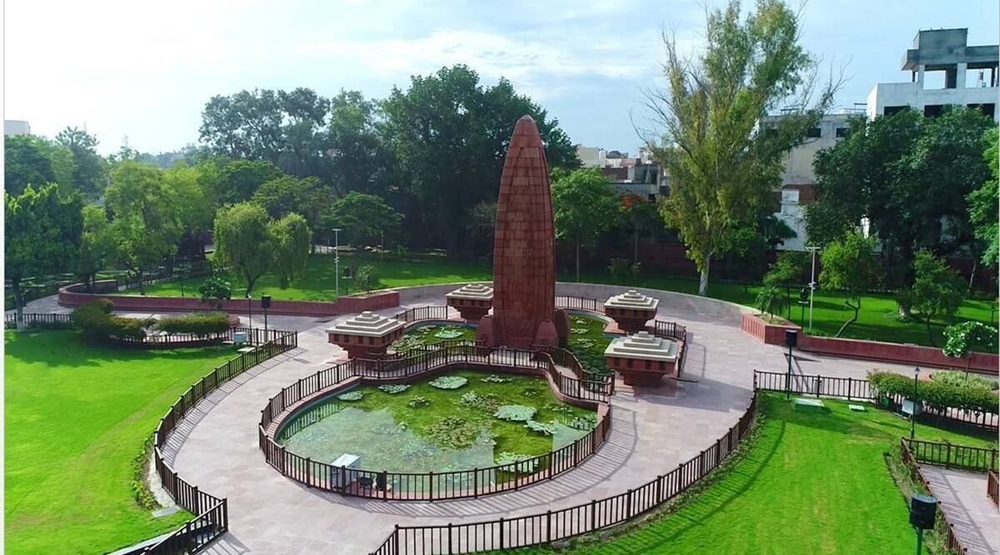
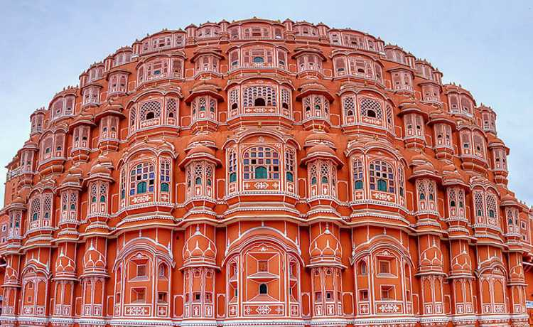

Taj Mahal
The Taj Mahal is one of the seven wonders of the world and is considered to be the most popular tourist attraction in the country. A symbol of love, the Taj was built by Mughal Emperor Shah Jahan for his queen Mumtaz. Tagore described the Taj as a "teardrop on the cheek of eternity". The monument attracts a lot of tourists all around the year.
Red Fort

The Red Fort was the official seat of Mughal rule and authority from 1648 onwards, when the 5th Mughal emperor, Shah Jahan, decided to move the capital of the empire from Agra to Delhi. Constructed using red sandstone, it remains one of the architectural marvels of the Mughal era. In 2007, it became a UNESCO World Heritage Site.
Jallianwala Bagh
Jallianwala Bagh is a place of great historical importance during the Indian struggle for Independence. It is a public garden in Amritsar which houses a memorial of national importance that was established by the government of India in 1951 to commemorate the massacre of peaceful celebrators by British forces on April 13,1919.
Golden Temple

Also called Sri Harmandir Sahib or Swarna Mandir, the shrine was designed by Guru Arjan Sahib and its foundation laid by Muslim saint Hazrat Mian Mir Ji of Lahore on 1st December 1588.
Gwalior Fort
Perched high at the top of a vast rocky massif, Gwalior Fort is a place hard to miss being visible from every nook and corner of the city. Regarded as one of most impregnable fortress of north and central India, the place is a must-visit.
Hawa Mahal
The Hawa Mahal stands at the intersection of the main road in Jaipur, Badi Chaupad. It is regarded as the signature building of Jaipur and was built by Maharaja Sawai Pratap Singh.
India Gate

The All India War Memorial, popularly known as the India Gate, is a war memorial located in New Delhi. It is dedicated to the 82,000 soldiers, both Indian and British, who died during the First World War and the Third Anglo-Afghan War. The Amar Jawan Jyoti is the burning structure, right underneath the archway, which symbolizes the eternal, immortal soldiers of India.
Gateway Of India

One of the most distinguished monument in Mumbai, The Gateway of India was built in 1924. Now it has become a popular tourist hub in the city. Located at Apollo Bunder Waterfront, the monument overlooks the Arabian Sea in the most beautiful way.
Qutub Minar

At a height of 234 feet, this minaret is the tallest individual tower in the world and is a perfect display of Mughal architectural brilliance. The soaring and brave tower that allures tourists despite being destroyed by ravages of natural apocalypses several times, Qutub Minar is the tallest individual tower in the world and second tallest monument of Delhi. A UNESCO World Heritage Site, it is located in Mehrauli and its construction was started in 1192 by Qutb Ud-Din-Aibak, founder of Delhi Sultanate. Later, the tower was built by various rulers over the centuries. The sight of this glorious monument takes you back to the rich history of India.